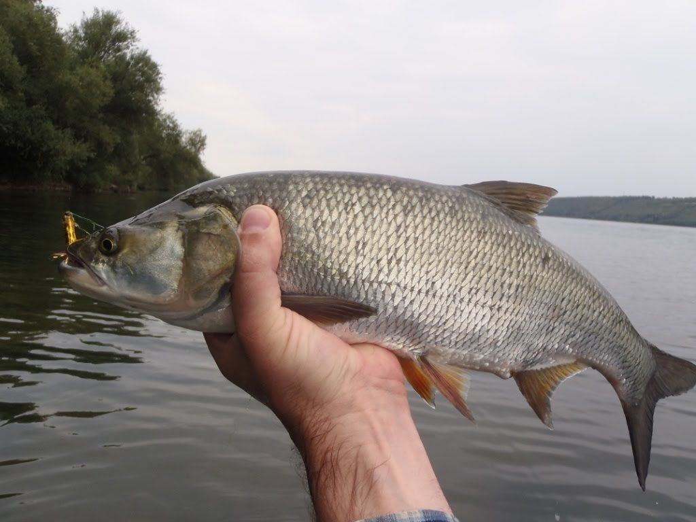
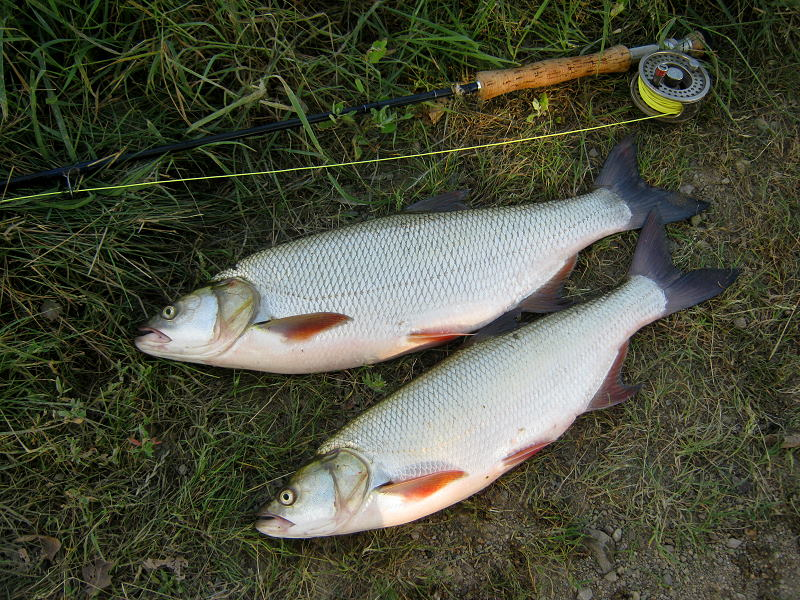

Boleń pospolity, rapa, rap (Aspius aspius, syn. Leuciscus aspius) to europejska ryba z rodziny  karpiowatych o wąskim, długim ciele, spłaszczonym bocznie. Płetwy mają czerwonawy odcień. Grzbiet jest stalowy, boki srebrne, spód jest białawy. Szczęka dolna ma trójkątną wypukłość. Ma dwa szeregi zębów gardłowych. Zwykle osobnik bolenia waży około 4 kg. Największy okaz złowiony w Polsce ważył 8,5 kg.
Występowanie i środowisko
Ryba ta występuje w prawie całej Europie, najczęściej w jej środkowej i południowej części. Preferuje wody płynące. Można ją spotkać w większych rzekach, potokach, zatokach morskich, a także w zbiornikach wody stojącej. Nie jest to liczna ryba naszych rzek i jezior.
Tryb życia i zachowanie
Ryba ta ma zwyczaj uderzać ogonem o powierzchnię wody, ogłuszając swoje ofiary. Bywa, że wyskakuje ponad jej powierzchnię.
Pożywienie
To drapieżnik, co jest dość wyjątkowe w rodzinie karpiowatych. Poluje na ukleje, płocie, jelce i inne ryby. Młode osobniki zjadają plankton.
Rozmnażanie
Gatunek ten trze się od kwietnia do maja w wodach o żwirowym podłożu.
Ciekawostki
Mimo, że boleń należy do rodziny karpiowatych, ryba ta jest drapieżnikiem.
Okres ochronny: 01.01 – 30.04
Wymiar ochronny: 40 cm
Dobowy limit połowu: 3 szt. razem z karpiem, lipieniem, amurem, sandaczem, szczupakiem, brzaną, pstrągiem potokowym
Rekord Polski: 8,43 kg 99 cm